A Sinister Stranger A Sinister Stranger | | | | Hemenster | 1 | 0 |
 A'abla A'abla | | | healer | Duel Arena | 1 | 0 |
 Abbot Langley Abbot Langley | | 15 | | Monastery | 1 | 0 |
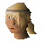 Achietties | | 42 | | Heros' Guild | 1 | 0 |
 Aemad Aemad | | | shop_keeper | Zoo | 1 | 0 |
 Afrah Afrah | | 7 | | Duel Arena | 1 | 0 |
 Aggie Aggie | | | | Market | 1 | 0 |
 Air elemental Air elemental | 34 | 30 | | Camelot Castle (underground) | 7 | 0 |
 Al Shabim. Al Shabim. | | | | Bedabin Camp | 1 | 0 |
 Al-Kharid warrior Al-Kharid warrior | 9 | 19 | | Al Kharid | 9 | 18 |
 Albatross Albatross | 26 | 32 | | Ship Yard | 2 | 0 |
 Alfonse the waiter Alfonse the waiter | | 7 | shop_keeper | Agility Arena | 1 | 0 |
 Almera Almera | | | | Baxtorian Falls | 1 | 0 |
 Alomone Alomone | 13 | 25 | | Zoo (underground) | 1 | 0 |
 Alrena Alrena | | | | Combat Training Camp | 1 | 0 |
 Aluft Gianne Aluft Gianne | 1 | | | Grand Tree | 1 | 0 |
 Ana Ana | | | | Desert Mining Camp (underground) | 1 | 0 |
 Anabarrel Anabarrel | | | | | 0 | 0 |
 Anita Anita | | | | Swamp | 1 | 0 |
 Anna Anna | | | | Sinclair Mansion | 1 | 0 |
 Apothecary Apothecary | | | | River Lum | 1 | 0 |
 Archaeological expert Archaeological expert | | | | Exam Centre | 1 | 0 |
 Archer Archer | 37 | 50 | | East Ardougne | 6 | 0 |
 Archer Archer | | | | Jail | 1 | 0 |
 Archer Archer | 42 | 50 | death_archer | Burthorpe | 4 | 0 |
 Archer Archer | 42 | 50 | death_archer | Burthorpe | 4 | 0 |
 Archer Archer | 42 | 50 | death_archer | Burthorpe | 1 | 0 |
 Arhein Arhein | | | shop_keeper | Catherby | 1 | 0 |
 Armour salesman Armour salesman | | | shop_keeper | Hemenster | 1 | 0 |
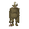 Ash | | | | Death Plateau | 1 | 0 |
 Aubury Aubury | | | shop_keeper | Palace | 1 | 0 |
 Baby blue dragon Baby blue dragon | 48 | 50 | | Dark Wizards' Tower (underground) | 9 | 0 |
 Baby dragon Baby dragon | 48 | 50 | | | 0 | 0 |
 Bailey Bailey | | | | Fishing Platform | 1 | 0 |
 Baker Baker | | | shop_keeper | Zoo | 2 | 0 |
 Bandit Bandit | 22 | 27 | | Bandit Camp | 6 | 19 |
 Banker Banker | | | bank_teller | Camelot Castle | 33 | 0 |
 Banker Banker | | | bank_teller | Camelot Castle | 25 | 0 |
 Banker Banker | | | bank_teller | Shantay Pass | 3 | 0 |
 Banker Banker | | | bank_teller | Shantay Pass | 2 | 0 |
 Banker Banker | | | | Lumbridge Swamp (underground) | 4 | 0 |
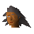 Banker | | | | Kharazi Jungle | 2 | 0 |
 Banker Banker | | | bank_teller | Canifis | 2 | 0 |
 Banker Banker | | | | Wizards' Tower | 2 | 0 |
 Baraek Baraek | | | | Varrock | 1 | 0 |
 Barbarian Barbarian | 7 | 14 | barbarian | Barbarian Village | 19 | 20 |
 Barbarian guard Barbarian guard | 8 | 14 | | | 0 | 0 |
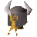 Barbarian guard | | | | Barbarian Outpost | 2 | 0 |
 Barbarian woman Barbarian woman | 8 | 14 | barbarian | Barbarian Village | 8 | 20 |
 Barker Barker | | | shop_keeper | Canifis | 1 | 0 |
 Barmaid Barmaid | | | | White Knights' Castle | 2 | 0 |
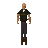 Barman | | | | | 0 | 0 |
 Barman Barman | | | shop_keeper | Grand Tree | 3 | 0 |
 Bartender Bartender | | | | Dig Site | 1 | 0 |
 Bartender Bartender | | | | East Ardougne | 1 | 0 |
| Bartender | | | | Agility Arena | 1 | 0 |
 Bartender Bartender | | | | Market | 1 | 0 |
 Bartender Bartender | | | | Seers' Village | 1 | 0 |
 Bartender Bartender | | | | River Lum | 1 | 0 |
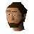 Bartender | | | | Lumber Yard | 1 | 0 |
 Bartender Bartender | | | | Yanille | 2 | 0 |
| Bat | 27 | 8 | | | 0 | 0 |
 Battle mage Battle mage | 54 | 120 | battle_mage | Mage Arena | 3 | 0 |
 Battle mage Battle mage | 54 | 120 | battle_mage | Mage Arena | 3 | 0 |
 Battle mage Battle mage | 54 | 120 | battle_mage | Mage Arena | 3 | 0 |
 Bear Bear | 21 | 27 | bear | Legends Guild | 31 | 0 |
 Bear Bear | 19 | 25 | bear | Goblin Village | 12 | 0 |
 Bedabin Nomad Bedabin Nomad | | | shop_keeper | Bedabin Camp | 8 | 0 |
 Bedabin Nomad Guard Bedabin Nomad Guard | 64 | 70 | | Bedabin Camp | 1 | 0 |
 Beggar Beggar | | | | | 0 | 0 |
 Berry Berry | 71 | 90 | mountain_troll | | 0 | 0 |
 Berry Berry | 71 | 90 | mountain_troll | Troll Stronghold (underground) | 1 | 0 |
 Betty Betty | | | shop_keeper | Rimmington | 1 | 0 |
 Big Dave Big Dave | | | | Hemenster | 1 | 0 |
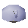 Big fish | | | | | 0 | 0 |
 Big Wolf Big Wolf | 73 | 74 | | White Wolf Mountain | 1 | 0 |
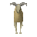 Billy | | | | Death Plateau | 1 | 0 |
 Billy Rehnison Billy Rehnison | | | | West Ardougne | 1 | 0 |
 Black Demon Black Demon | 172 | 157 | black_demon | Black Knights' Castle (underground) | 7 | 21 |
 Black Demon Black Demon | 172 | 157 | black_demon | | 0 | 0 |
 Black dragon Black dragon | 227 | 190 | | Catherby (underground) | 4 | 21 |
 Black Heather Black Heather | 34 | 37 | bandit_camp_leader | Bandit Camp | 1 | 18 |
 Black Knight Black Knight | 33 | 42 | | Palace | 5 | 23 |
 Black Knight Black Knight | 33 | 42 | | Make Over Mage (underground) | 45 | 23 |
 Black Knight Black Knight | | | | Black Knights' Castle | 1 | 0 |
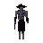 Black Knight Titan | 120 | 142 | | | 1 | 0 |
 Black unicorn Black unicorn | 27 | 29 | unicorn | Graveyard of Shadows | 12 | 0 |
 Blessed Giant rat Blessed Giant rat | 9 | 30 | | Underground Pass (underground) | 4 | 0 |
 Blessed spider Blessed spider | 39 | 32 | | Gnome Ball Field (underground) | 53 | 0 |
 Bloated Toad Bloated Toad | | | | | 0 | 0 |
 Blue dragon Blue dragon | 111 | 105 | | Wizards' Guild (underground) | 10 | 21 |
 Blurberry Blurberry | | | | Grand Tree | 1 | 0 |
 Bob Bob | | | shop_keeper | Lumbridge Swamp | 1 | 0 |
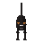 Bob | | | | Chaos Temple | 1 | 0 |
 Bob Bob | | | | Sinclair Mansion | 1 | 0 |
 Bolkoy Bolkoy | | | shop_keeper | Tree Gnome Village | 1 | 0 |
 Bonzo Bonzo | | | | Hemenster | 1 | 0 |
 Boot Boot | | 16 | | Park (underground) | 1 | 0 |
 Border Guard Border Guard | | 22 | | Toll Gate | 2 | 0 |
 Border Guard Border Guard | | 22 | | Toll Gate | 2 | 0 |
 Boulder Boulder | | | | | 3 | 0 |
 Boulder Boulder | | | | Observatory (underground) | 1 | 0 |
 Bouncer Bouncer | 137 | 116 | | Fight Arena | 1 | 0 |
 Bow and Arrow salesman Bow and Arrow salesman | | | shop_keeper | Hemenster | 1 | 0 |
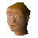 Boy | | | | Druids' Circle | 1 | 0 |
 Bravek Bravek | | | | West Ardougne | 1 | 0 |
 Breoca Breoca | 5 | 10 | citizen_burthorpe | Chaos Temple | 1 | 18 |
 Brian Brian | | | shop_keeper | Port Sarim | 1 | 0 |
 Brimstail Brimstail | | | | Gnome Ball Field (underground) | 1 | 0 |
 Brother Brace Brother Brace | | 15 | | Tutorial Island | 1 | 0 |
 Brother Cedric Brother Cedric | | | | Zoo | 1 | 0 |
 Brother Jered Brother Jered | | 15 | | Monastery | 1 | 0 |
 Brother Kojo Brother Kojo | | | | Battlefield | 1 | 0 |
 Brother Omad Brother Omad | | | | Fight Arena | 1 | 0 |
 Bugs Bugs | | | | Wizards' Guild (underground) | 1 | 0 |
 Burntmeat Burntmeat | | | | Troll Stronghold (underground) | 1 | 0 |
 Butler Jones Butler Jones | | | | Zoo | 2 | 0 |
| Butterfly | | | | Agility Training Area | 25 | 0 |
| Butterfly | | | | Lumbridge Swamp (underground) | 18 | 0 |
| Butterfly | | | | Tutorial Island | 10 | 0 |
| Butterfly | | | | Gnome Ball Field | 4 | 0 |
| Butterfly | | | | Jail | 8 | 0 |
 Cabin Boy Jenkins Cabin Boy Jenkins | | | | Port Sarim | 1 | 0 |
 Caleb Caleb | | | | Catherby | 1 | 0 |
 Camel Camel | | | | Toll Gate | 12 | 0 |
 Candle maker Candle maker | | | shop_keeper | Catherby | 1 | 0 |
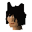 Cap'n Izzy No-Beard | | | | Agility Arena | 1 | 0 |
 Captain Barnaby Captain Barnaby | | | | Necromancer | 1 | 0 |
 Captain Rovin Captain Rovin | | | | Palace | 1 | 0 |
| Captain Shanks | | | | Cairn Isle | 1 | 0 |
 Captain Siad Captain Siad | | | | Desert Mining Camp | 1 | 0 |
 Captain Tobias Captain Tobias | | | sailor | Port Sarim | 1 | 0 |
 Carla Carla | | | | West Ardougne | 1 | 0 |
 Carol Carol | | | | Sinclair Mansion | 1 | 0 |
 Caroline Caroline | | | | Fishing Platform | 1 | 0 |
 Cassie Cassie | | | shop_keeper | Park | 1 | 0 |
 Cat Cat | | | petcat | | 0 | 0 |
 Cat Cat | | | petcat | | 0 | 0 |
 Cat Cat | | | petcat | | 0 | 0 |
 Cat Cat | | | petcat | | 0 | 0 |
 Cat Cat | | | petcat | | 0 | 0 |
 Cat Cat | | | petcat | | 0 | 0 |
 Cave monk Cave monk | | | | Keep Le Faye | 1 | 0 |
 Ceolburg Ceolburg | 4 | 10 | citizen_burthorpe | Chaos Temple | 1 | 18 |
 Ceril Carnillean Ceril Carnillean | | | | Zoo | 2 | 0 |
 chadwell chadwell | | | shop_keeper | Underground Pass | 1 | 0 |
 Chamber guardian Chamber guardian | | | | | 1 | 0 |
 Chancy Chancy | | | | Rimmington | 1 | 0 |
 Chancy Chancy | | | | Dig Site | 1 | 0 |
 Chaos druid Chaos druid | 13 | 20 | | Wizards' Guild (underground) | 32 | 16 |
 Chaos druid warrior Chaos druid warrior | 37 | 40 | | Wizards' Guild (underground) | 9 | 17 |
 Chaos dwarf Chaos dwarf | 48 | 61 | | Dark Wizards' Tower (underground) | 17 | 23 |
 Charlie Charlie | | | | | 0 | 0 |
 Charlie the cook Charlie the cook | | 3 | | Agility Arena | 1 | 0 |
 Cheerleader Cheerleader | | | | Gnome Ball Field | 2 | 0 |
 Chemist Chemist | | | | Rimmington | 1 | 0 |
 Chicken Chicken | 1 | 3 | chicken | River Lum | 53 | 2 |
 Chicken Chicken | 1 | 3 | chicken | Death Plateau | 2 | 2 |
 Chicken Chicken | | | | Draynor Manor | 1 | 0 |
 Chicken Chicken | 3 | 3 | | Tutorial Island | 5 | 0 |
 Child Child | | | | Underground Pass | 16 | 0 |
 Child Child | | | | Underground Pass | 7 | 0 |
 Chompy bird Chompy bird | 6 | 10 | | | 0 | 0 |
 Chompy bird Chompy bird | | | | | 0 | 0 |
 Chronozon Chronozon | 170 | 60 | | Monastery (underground) | 1 | 0 |
 Chuck Chuck | 1 | | | | 0 | 0 |
 City guard City guard | 83 | 80 | | Gu'Tanoth | 3 | 0 |
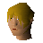 Civillian | | | | Underground Pass | 4 | 0 |
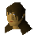 Civillian | | | | Underground Pass | 4 | 0 |
 Civillian Civillian | | | | Underground Pass | 4 | 0 |
 Claus the chef Claus the chef | | | | Zoo (underground) | 1 | 0 |
 Clerk Clerk | | | | West Ardougne | 1 | 0 |
 Clivet Clivet | 13 | 25 | | Zoo (underground) | 1 | 0 |
 Colonel Radick Colonel Radick | 38 | 65 | | Yanille | 1 | 20 |
 Combat Instructor Combat Instructor | 146 | | | Tutorial Island (underground) | 1 | 0 |
 Commander Montai Commander Montai | | | | Battlefield | 1 | 0 |
 Competition Judge Competition Judge | | | | Hemenster | 1 | 0 |
 Cook Cook | | | | Lumbridge Swamp | 1 | 0 |
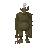 Cook | | | | Troll Stronghold (underground) | 1 | 0 |
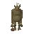 Cook | | | | Troll Stronghold (underground) | 1 | 0 |
 Cook Cook | | | | Troll Stronghold (underground) | 1 | 0 |
 Cormorant Cormorant | 26 | 32 | | Ship Yard | 1 | 0 |
 Councillor Halgrive Councillor Halgrive | | | | Zoo | 1 | 0 |
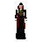 Count Draynor | 34 | 35 | | | 0 | 0 |
 Cow Cow | 2 | 8 | cow | Toll Gate | 52 | 0 |
 Cow Cow | 2 | 8 | cow | | 0 | 0 |
 Cow Cow | 2 | 8 | cow | | 0 | 0 |
 Crate Crate | | | | Lumber Yard | 6 | 0 |
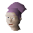 Crone | | | | | 0 | 0 |
 Curator Curator | | | | Palace | 1 | 0 |
 Customs officer Customs officer | | | | Agility Arena | 5 | 0 |
 Cyclops Cyclops | 56 | 55 | | Zoo | 1 | 0 |
 Dad Dad | 101 | 120 | | Death Plateau | 1 | 0 |
 Dalal Dalal | | 7 | | Toll Gate | 1 | 0 |
 Dark mage Dark mage | 13 | | | Underground Pass | 1 | 0 |
 Dark warrior Dark warrior | 8 | 17 | | Dark Knight Fortress | 15 | 19 |
 Dark wizard Dark wizard | 20 | 24 | | Dark Wizards' Tower | 14 | 29 |
 Dark wizard Dark wizard | 7 | 12 | | River Lum | 22 | 29 |
 David David | | | | Sinclair Mansion | 1 | 0 |
 Davon Davon | | | shop_keeper | Agility Arena | 1 | 0 |
 Dead tree Dead tree | | | macro_event_ent | | 0 | 0 |
 Dead tree Dead tree | | | macro_event_ent | | 0 | 0 |
 Deadly red spider Deadly red spider | 34 | 35 | | Lava Maze | 48 | 0 |
 Death wing Death wing | 83 | 80 | | Kharazi Jungle (underground) | 8 | 0 |
 Delrith Delrith | 27 | 7 | | River Lum | 1 | 0 |
 Denulth Denulth | | | | Heros' Guild | 1 | 0 |
 Desert Wolf Desert Wolf | 27 | 34 | | Desert Mining Camp | 54 | 0 |
 DeVinci DeVinci | | | | Rimmington | 1 | 0 |
 DeVinci DeVinci | | | | Dig Site | 1 | 0 |
 Diango Diango | | | shop_keeper | Market | 1 | 0 |
 Digsite workman Digsite workman | | | | Dig Site | 17 | 0 |
 Digsite workman Digsite workman | | | | Exam Centre (underground) | 2 | 0 |
 Dimintheis Dimintheis | | | | Dig Site | 1 | 0 |
 Diseased sheep 1 Diseased sheep 1 | | | diseased_sheep | Fishing Guild | 3 | 0 |
 Diseased sheep 2 Diseased sheep 2 | | | diseased_sheep | Fishing Guild | 3 | 0 |
 Diseased sheep 3 Diseased sheep 3 | | | diseased_sheep | Combat Training Camp | 3 | 0 |
 Diseased sheep 4 Diseased sheep 4 | | | diseased_sheep | Fishing Guild | 3 | 0 |
 Doctor Orbon Doctor Orbon | | | | East Ardougne | 1 | 0 |
 Dog Dog | | | | White Knights' Castle | 1 | 0 |
 Dommik Dommik | | | shop_keeper | Toll Gate | 1 | 0 |
 Donny the lad Donny the lad | 34 | 37 | bandit_camp_leader | Bandit Camp | 1 | 18 |
 Donovan the Family Handyman Donovan the Family Handyman | | | | Sinclair Mansion | 1 | 0 |
 Doomion Doomion | 91 | 87 | | | 1 | 0 |
 Door man Door man | | | | Lumbridge Swamp (underground) | 4 | 0 |
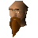 Doric | | | | Druids' Circle | 1 | 0 |
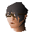 Dr Harlow | | | | Lumber Yard | 1 | 0 |
 Drezel Drezel | | | | Temple | 1 | 0 |
 Drezel Drezel | | | | Temple (underground) | 1 | 0 |
 Drogo dwarf Drogo dwarf | | | shop_keeper | Dwarven Mine (underground) | 1 | 0 |
 Druid Druid | 33 | 30 | | Taverly | 24 | 17 |
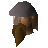 Drunken Dwarf | | 255 | | | 0 | 0 |
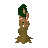 Dryad | 1 | | | | 0 | 0 |
 Duck Duck | 1 | 3 | duck | River Lum | 73 | 0 |
 Duck Duck | 1 | 3 | duck | Fishing Guild | 83 | 0 |
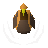 Duckling | 1 | 3 | duckling | | 0 | 0 |
 Duke Horacio Duke Horacio | | | | Lumbridge Swamp | 1 | 0 |
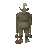 Dung | | | | Death Plateau | 1 | 0 |
 Dungeon rat Dungeon rat | 12 | 12 | | Fishing Guild (underground) | 7 | 0 |
 Dungeon rat Dungeon rat | 12 | 12 | | Zoo (underground) | 11 | 0 |
 Dunstan Dunstan | | | | Chaos Temple | 1 | 0 |
 Dwarf Dwarf | 10 | 16 | | Dwarven Mine (underground) | 51 | 18 |
 Dwarf Dwarf | 20 | 26 | | White Wolf Mountain (underground) | 8 | 18 |
 Dwarf Dwarf | 9 | 16 | | | 0 | 18 |
 Dwarf Dwarf | | | | Park | 5 | 0 |
 Dwarf Dwarf | | | shop_keeper | Dwarven Mine (underground) | 1 | 0 |
 Dwarf Dwarf | 10 | 16 | | Dwarven Mine | 12 | 0 |
 Dwarf Commander Dwarf Commander | | 16 | | Coal Trucks | 1 | 0 |
 Dwarf youngster Dwarf youngster | | 6 | | | 0 | 0 |
 Eadburg Eadburg | 4 | 10 | | Burthorpe | 1 | 0 |
 Eadgar Eadgar | | | | Troll Stronghold (underground) | 2 | 0 |
 Earth elemental Earth elemental | 35 | 35 | | Seers' Village (underground) | 5 | 0 |
 Earth elemental Earth elemental | 35 | 35 | | | 0 | 0 |
 Earth warrior Earth warrior | 51 | 54 | | Graveyard of Shadows (underground) | 11 | 12 |
 Echned Zekin Echned Zekin | 187 | 150 | | | 0 | 0 |
 Edmond Edmond | | | | West Ardougne (underground) | 2 | 0 |
 Elena Elena | | | | East Ardougne | 1 | 0 |
 Elena Elena | | | | Battlefield (underground) | 1 | 0 |
 Elizabeth Elizabeth | | | | Sinclair Mansion | 1 | 0 |
 Elkoy Elkoy | | | | Tree Gnome Village | 1 | 0 |
 Elkoy Elkoy | | | | Tree Gnome Village | 1 | 0 |
| Elvarg | 83 | 120 | | Agility Arena (underground) | 1 | 0 |
 Enclave guard Enclave guard | 83 | 80 | | Gu'Tanoth | 2 | 0 |
 Entrana Fire Bird Entrana Fire Bird | 2 | 5 | | Entrana | 1 | 0 |
 Eohric Eohric | | | | Burthorpe | 1 | 0 |
 Ernest Ernest | | | | | 0 | 0 |
 Escaping slave. Escaping slave. | | | | | 0 | 0 |
 Examiner Examiner | | | | Exam Centre | 3 | 0 |
 Fadli Fadli | | | | Duel Arena | 1 | 0 |
 Fairy Fairy | | | | Lumbridge Swamp (underground) | 42 | 0 |
 Fairy Fairy | | | | Toll Gate (underground) | 1 | 0 |
 Fairy Queen Fairy Queen | | | | Lumbridge Swamp (underground) | 1 | 0 |
 Fairy shop assistant Fairy shop assistant | | | shop_keeper | Wizards' Tower (underground) | 1 | 0 |
 Fairy shop keeper Fairy shop keeper | | | shop_keeper | Wizards' Tower (underground) | 1 | 0 |
 Fancy dress shop owner Fancy dress shop owner | | | shop_keeper | Dig Site | 1 | 0 |
 Farmer Farmer | 7 | 12 | | River Lum | 10 | 17 |
 Farmer Brumty Farmer Brumty | | | | Fishing Guild | 1 | 0 |
 Fat tony Fat tony | | | shop_keeper | Bandit Camp | 1 | 0 |
 Father Aereck Father Aereck | | | | Toll Gate | 1 | 0 |
 Father Lawrence Father Lawrence | | | | Palace | 1 | 0 |
 Father Urhney Father Urhney | | | | Lumbridge Swamp | 1 | 0 |
 Female slave Female slave | | | | Desert Mining Camp (underground) | 20 | 0 |
 Femi Femi | | | | Agility Training Area | 1 | 0 |
 Fernahei Fernahei | | | shop_keeper | Shilo Village | 1 | 0 |
 Fidelio Fidelio | | | shop_keeper | Canifis | 1 | 0 |
 Fightslave Fightslave | | | | Fight Arena | 3 | 0 |
 Filliman Tarlock Filliman Tarlock | | | | | 0 | 0 |
 Financial Advisor Financial Advisor | | | | Wizards' Tower | 1 | 0 |
 Fionella Fionella | | | shop_keeper | Legends Guild | 1 | 0 |
 Fire elemental Fire elemental | 35 | 30 | | Flax (underground) | 8 | 0 |
 Fire giant Fire giant | 86 | 111 | | Coal Trucks (underground) | 15 | 20 |
 Fire Warrior of Lesarkus Fire Warrior of Lesarkus | 84 | 59 | | | 0 | 0 |
 Fisherman Fisherman | | | fisherman_platform | Fishing Platform | 5 | 0 |
 Fisherman Fisherman | | | fisherman_platform | Fishing Platform | 4 | 0 |
 Fisherman Fisherman | | | fisherman_platform | Fishing Platform | 3 | 0 |
 Fisherman Fisherman | | | fisherman_platform | | 0 | 0 |
 Fisherman Fisherman | | | | | 1 | 0 |
 Fishing spot Fishing spot | | | | | 0 | 0 |
 Fishing spot Fishing spot | | | | | 0 | 0 |
 Fishing spot Fishing spot | | | | | 0 | 0 |
 Fishing spot Fishing spot | | | | | 0 | 0 |
 Fishing spot Fishing spot | | | freshfish | | 0 | 0 |
 Fishing spot Fishing spot | | | saltfish | | 0 | 0 |
 Fishing spot Fishing spot | | | rarefish | | 0 | 0 |
 Fishing spot Fishing spot | | | memberfish | | 0 | 0 |
 Fishing spot Fishing spot | | | category_453 | Hemenster | 1 | 0 |
 Fishing spot Fishing spot | | | category_453 | Hemenster | 1 | 0 |
 Fishing spot Fishing spot | | | category_453 | Hemenster | 1 | 0 |
 Fishing spot Fishing spot | | | category_453 | Fishing Guild | 1 | 0 |
 Fishing spot Fishing spot | | | freshfish | Gnome Ball Field | 7 | 0 |
 Fishing spot Fishing spot | | | freshfish | Combat Training Camp | 6 | 0 |
 Fishing spot Fishing spot | | | freshfish | Combat Training Camp | 2 | 0 |
 Fishing spot Fishing spot | | | rarefish | Fishing Guild | 11 | 0 |
 Fishing spot Fishing spot | | | memberfish | Fishing Guild | 6 | 0 |
 Fishing spot Fishing spot | | | freshfish | | 3 | 0 |
 Fishing spot Fishing spot | | | freshfish | Sinclair Mansion | 4 | 0 |
 Fishing spot Fishing spot | | | saltfish | Fishing Platform | 4 | 0 |
 Fishing spot Fishing spot | | | freshfish | Shilo Village | 3 | 0 |
 Fishing spot Fishing spot | | | freshfish | Dark Wizards' Tower | 4 | 0 |
 Fishing spot Fishing spot | | | saltfish | Dark Wizards' Tower | 4 | 0 |
 Fishing spot Fishing spot | | | saltfish | Catherby | 2 | 0 |
 Fishing spot Fishing spot | | | rarefish | Catherby | 2 | 0 |
 Fishing spot Fishing spot | | | memberfish | Catherby | 3 | 0 |
 Fishing spot Fishing spot | | | saltfish | Rimmington | 3 | 0 |
 Fishing spot Fishing spot | | | rarefish | Rimmington | 3 | 0 |
 Fishing spot Fishing spot | | | saltfish | Rimmington | 2 | 0 |
 Fishing spot Fishing spot | | | saltfish | Bandit Camp | 1 | 0 |
 Fishing spot Fishing spot | | | saltfish | Market | 2 | 0 |
 Fishing spot Fishing spot | | | freshfish | Cooks' Guild | 2 | 0 |
 Fishing spot Fishing spot | | | freshfish | Lumbridge | 2 | 0 |
 Fishing spot Fishing spot | | | saltfish | Shantay Pass | 2 | 0 |
 Fishing spot Fishing spot | | | | Dark Wizards' Tower (underground) | 3 | 0 |
 Fishing spot Fishing spot | | | freshfish | Observatory | 5 | 0 |
 Fishing spot Fishing spot | | | category_453 | Tutorial Island | 3 | 0 |
 Fly trap Fly trap | | 100 | | Brimhaven | 2 | 0 |
 Flynn Flynn | | | shop_keeper | White Knights' Castle | 1 | 0 |
 Foreman Foreman | 23 | 20 | | Ship Yard | 1 | 0 |
 Forester Forester | 15 | 17 | | | 0 | 0 |
 Forester Forester | | | | McGrubor's Wood | 4 | 0 |
 Fortress Guard Fortress Guard | 20 | 22 | | Black Knights' Castle | 6 | 0 |
 Frank Frank | | | | Sinclair Mansion | 1 | 0 |
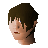 Fred the Farmer | | | | Jail | 1 | 0 |
 Frenita Frenita | | | shop_keeper | Wizards' Guild | 1 | 0 |
 Frincos Frincos | | | shop_keeper | Fishing Platform | 1 | 0 |
 Fur trader Fur trader | | | shop_keeper | Necromancer | 1 | 0 |
 Fycie Fycie | | | | Wizards' Guild (underground) | 1 | 0 |
 Gaius Gaius | | | shop_keeper | Taverly | 1 | 0 |
 Galahad Galahad | | | | Coal Trucks | 1 | 0 |
 Garv Garv | | 104 | | Brimhaven | 1 | 0 |
 Gem merchant Gem merchant | | | shop_keeper | Necromancer | 1 | 0 |
 Gem trader Gem trader | | | shop_keeper | Toll Gate | 1 | 0 |
 General Bentnoze General Bentnoze | | | | Goblin Village | 1 | 0 |
 General Khazard General Khazard | 112 | 170 | | Fight Arena | 2 | 0 |
 General Wartface General Wartface | | | | Goblin Village | 1 | 0 |
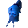 Genie | | | | | 0 | 0 |
 Gerald Gerald | | | | Combat Training Camp | 1 | 0 |
 Gerrant Gerrant | | | shop_keeper | Rimmington | 1 | 0 |
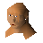 Gertrude | | | | Cooks' Guild | 1 | 0 |
 Gertrudes cat Gertrudes cat | | | | Lumber Yard | 1 | 0 |
 Ghast Ghast | | 45 | | Mort Myre Swamp | 124 | 0 |
 Ghast Ghast | 30 | 45 | | | 0 | 0 |
 Ghost Ghost | 19 | 25 | | Taverly (underground) | 53 | 0 |
 Ghost Ghost | 19 | 25 | | Draynor Manor | 5 | 0 |
 Ghost Ghost | 19 | 25 | | Melzar's Maze | 5 | 0 |
 Ghost Ghost | 24 | 20 | | Battlefield | 6 | 0 |
 Giant Giant | 28 | 35 | | Cooks' Guild (underground) | 27 | 24 |
 Giant bat Giant bat | 27 | 32 | | Underground Pass (underground) | 84 | 0 |
 Giant bat Giant bat | | | | | 8 | 0 |
 Giant rat Giant rat | 3 | 5 | giantrat | Grand Tree (underground) | 33 | 0 |
 Giant rat Giant rat | 6 | 10 | giantrat | Lumbridge Swamp | 33 | 0 |
 Giant rat Giant rat | 6 | 10 | giantrat | Melzar's Maze | 7 | 0 |
 Giant rat Giant rat | 3 | 3 | | Tutorial Island (underground) | 13 | 0 |
 Giant spider Giant spider | 2 | 5 | | Zoo (underground) | 50 | 0 |
 Giant spider Giant spider | 27 | 32 | | Deserted Keep | 17 | 0 |
 Glough Glough | | | | Baxtorian Falls | 1 | 0 |
 Gnome Gnome | 1 | 3 | | Battlefield | 44 | 0 |
 Gnome Gnome | 1 | 3 | | Battlefield | 64 | 0 |
 Gnome Gnome | 1 | 3 | | Battlefield | 35 | 0 |
 Gnome Gnome | | | | Battlefield | 1 | 0 |
 Gnome Gnome | | | | Battlefield | 1 | 0 |
 Gnome Gnome | | | | Battlefield | 1 | 0 |
 Gnome ball referee Gnome ball referee | | | | Gnome Ball Field | 1 | 0 |
 Gnome baller Gnome baller | | | | | 0 | 0 |
 Gnome baller Gnome baller | | | | Gnome Ball Field | 6 | 0 |
 Gnome baller Gnome baller | | | | | 0 | 0 |
 Gnome baller Gnome baller | | | | | 0 | 0 |
 Gnome baller Gnome baller | | | | | 0 | 0 |
 Gnome baller Gnome baller | | | | Gnome Ball Field | 4 | 0 |
 Gnome baller Gnome baller | | | | | 0 | 0 |
 Gnome baller Gnome baller | | | | | 0 | 0 |
 Gnome baller Gnome baller | | | | | 0 | 0 |
 Gnome baller Gnome baller | | | | Gnome Ball Field | 4 | 0 |
 Gnome baller Gnome baller | | | | | 0 | 0 |
 Gnome baller Gnome baller | | | | | 0 | 0 |
 Gnome baller Gnome baller | | | | | 0 | 0 |
 Gnome banker Gnome banker | | | bank_teller | Agility Training Area | 9 | 0 |
 Gnome child Gnome child | 1 | 2 | | Gnome Ball Field | 10 | 0 |
 Gnome child Gnome child | 1 | 2 | | Tree Gnome Stronghold | 2 | 0 |
 Gnome child Gnome child | 1 | 2 | | Tree Gnome Stronghold | 2 | 0 |
 Gnome guard Gnome guard | 23 | 31 | | Grand Tree | 43 | 0 |
 Gnome guard Gnome guard | 23 | 31 | | Grand Tree | 26 | 0 |
 Gnome pilot Gnome pilot | | | | Ship Yard | 6 | 0 |
 Gnome shop keeper Gnome shop keeper | | | | | 0 | 0 |
 Gnome trainer Gnome trainer | | | | Agility Training Area | 11 | 0 |
 Gnome troop Gnome troop | 1 | 3 | gnome_troop | Battlefield | 14 | 0 |
 Gnome troop Gnome troop | 1 | 3 | gnome_troop | Battlefield | 15 | 0 |
 Gnome Waiter Gnome Waiter | 1 | | shop_keeper | Grand Tree | 2 | 0 |
 Gnome winger Gnome winger | | | | Gnome Ball Field | 2 | 0 |
 Gnome winger Gnome winger | | | | | 0 | 0 |
 Gnome woman Gnome woman | 1 | 2 | | Grand Tree | 36 | 0 |
 Gnome woman Gnome woman | 1 | 2 | | Agility Training Area | 31 | 0 |
 Goblin Goblin | 2 | 5 | | Rimmington | 87 | 17 |
 Goblin Goblin | 5 | 12 | | Fishing Guild | 91 | 17 |
 Goblin Goblin | 13 | 16 | | Fishing Guild (underground) | 10 | 17 |
 Goblin Goblin | 5 | 12 | | Goblin Village | 10 | 22 |
 Goblin Goblin | 5 | 12 | | Goblin Village | 11 | 22 |
 Goblin guard Goblin guard | 42 | 43 | | Observatory (underground) | 1 | 17 |
 Godric Godric | | | | Troll Stronghold (underground) | 1 | 0 |
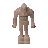 Golem | 55 | 70 | | | 0 | 0 |
 Golrie Golrie | | | | Tree Gnome Village (underground) | 1 | 0 |
 Gorad Gorad | 68 | 80 | | Gu'Tanoth | 1 | 0 |
 Gossip Gossip | | | | Sinclair Mansion | 2 | 0 |
 Grail Maiden Grail Maiden | | | | | 10 | 0 |
 Grandpa Jack Grandpa Jack | | | | Hemenster | 1 | 0 |
 Grave Scorpion Grave Scorpion | 12 | 7 | | Battlefield | 5 | 0 |
 Greater demon Greater demon | 92 | 87 | | Wizards' Guild (underground) | 14 | 20 |
 Green dragon Green dragon | 79 | 75 | | Lava Maze | 5 | 21 |
 Greldo Greldo | | | | Black Knights' Castle | 1 | 0 |
 Grew Grew | | | | Gu'Tanoth | 1 | 0 |
 Grip Grip | 22 | 25 | | Brimhaven | 1 | 0 |
 Grubor Grubor | | 12 | | Agility Arena | 1 | 0 |
 Grum Grum | | | shop_keeper | Rimmington | 1 | 0 |
 Guard Guard | 21 | 22 | guard | Palace | 43 | 24 |
 Guard Guard | 22 | 22 | guard | | 0 | 24 |
 Guard Guard | 20 | 22 | guard | Zoo | 10 | 24 |
 Guard Guard | | | | Combat Training Camp | 7 | 0 |
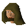 Guard | | | | Combat Training Camp | 3 | 0 |
 Guard Guard | | | | Combat Training Camp | 4 | 0 |
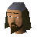 Guard | 37 | 50 | | Hemenster | 11 | 0 |
 Guard Guard | | | | Palace | 1 | 0 |
 Guard Guard | 37 | 40 | death_guard | Burthorpe | 2 | 1 |
 Guard Guard | 37 | 40 | death_guard | Burthorpe | 1 | 1 |
 Guard Guard | | | | Zoo | 1 | 0 |
 Guard Guard | | | | Sinclair Mansion | 2 | 0 |
 Guard Guard | | | | Troll Stronghold (underground) | 1 | 0 |
 Guard Guard | | | | Troll Stronghold (underground) | 1 | 0 |
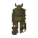 Guard | | | | Troll Stronghold (underground) | 1 | 0 |
 Guard Guard | | | | Troll Stronghold (underground) | 1 | 0 |
 Guard Guard | | | | Troll Stronghold (underground) | 1 | 0 |
 Guard Guard | | | | Troll Stronghold (underground) | 1 | 0 |
 Guard Guard | | | | Troll Stronghold (underground) | 1 | 0 |
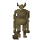 Guard | | | | Trollheim (underground) | 1 | 0 |
 Guard Guard | | | | Troll Stronghold (underground) | 1 | 0 |
 Guard Bandit Guard Bandit | 22 | 27 | | Bandit Camp | 4 | 0 |
 Guard dog Guard dog | 44 | 49 | | McGrubor's Wood | 17 | 0 |
 Guardian of Armadyl Guardian of Armadyl | 45 | 50 | guardian_of_armadyl | McGrubor's Wood (underground) | 3 | 0 |
 Guardian of Armadyl Guardian of Armadyl | 43 | 40 | guardian_of_armadyl | McGrubor's Wood (underground) | 2 | 0 |
 Guidor Guidor | | | | Exam Centre | 1 | 0 |
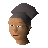 Guidor's wife | | | | Exam Centre | 1 | 0 |
 Guild master Guild master | | | | River Lum | 1 | 0 |
 Gujuo Gujuo | | | | | 0 | 0 |
 Gull Gull | 26 | 32 | | Ship Yard | 10 | 0 |
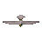 Gull | | 32 | | | 6 | 0 |
 Gull Gull | | 32 | | | 8 | 0 |
 Gulluck Gulluck | | | shop_keeper | Grand Tree | 1 | 0 |
| Gundai | | | | | 1 | 0 |
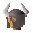 Gunnjorn | | | | Agility Training Area | 1 | 0 |
 Gunthor the brave Gunthor the brave | 29 | 35 | | Monastery | 1 | 22 |
 Gypsy Gypsy | | | | Varrock | 1 | 0 |
 Hadley Hadley | | | | Baxtorian Falls | 1 | 0 |
 Hairdresser Hairdresser | | | | White Knights' Castle | 1 | 0 |
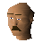 Hajedy | | | | Agility Arena | 1 | 0 |
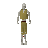 Half-Souless | 1 | | | | 16 | 0 |
 Hamid Hamid | | | | Exam Centre | 1 | 0 |
 Hans Hans | | | | Lumbridge Swamp | 1 | 0 |
 Harold Harold | | | | Burthorpe | 1 | 0 |
 Harry Harry | | | shop_keeper | Catherby | 1 | 0 |
 Hassan Hassan | | | | Al Kharid | 1 | 0 |
 Hazeel Hazeel | 296 | | | | 0 | 0 |
 Hazeel Cultist Hazeel Cultist | 13 | 25 | | Zoo (underground) | 5 | 0 |
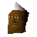 Hazelmere | | | | Wizards' Guild | 1 | 0 |
 Head chef Head chef | | | | Cooks' Guild | 1 | 0 |
 Head mourner Head mourner | | | | West Ardougne | 1 | 0 |
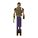 Head Thief | 26 | 37 | | Fight Arena (underground) | 1 | 0 |
 Heckel Funch Heckel Funch | | | shop_keeper | Grand Tree | 1 | 0 |
 Helemos Helemos | | | shop_keeper | Heros' Guild | 1 | 0 |
 Hellhound Hellhound | 122 | 116 | | Catherby (underground) | 7 | 1 |
 Hengrad Hengrad | | | | Fight Arena | 1 | 0 |
 Henryeta Carnillean Henryeta Carnillean | | | | Zoo | 1 | 0 |
 Hero Hero | 69 | 82 | | Zoo | 3 | 0 |
 Herquin Herquin | | | shop_keeper | White Knights' Castle | 1 | 0 |
 Hetty Hetty | | | | Rimmington | 1 | 0 |
 Hickton Hickton | | | shop_keeper | Catherby | 1 | 0 |
 High Priest High Priest | | | | Dark Wizards' Tower | 1 | 0 |
 Highwayman Highwayman | 5 | 13 | | Market | 5 | 0 |
 Hild Hild | 4 | 10 | citizen_burthorpe | Chaos Temple | 1 | 18 |
 Hobbes Hobbes | | | | Sinclair Mansion | 1 | 0 |
 Hobgoblin Hobgoblin | 28 | 29 | | Ruins | 63 | 25 |
 Hobgoblin Hobgoblin | 42 | 49 | | Underground Pass | 15 | 22 |
 Holgart Holgart | | | | Fishing Platform | 1 | 0 |
 Holgart Holgart | | | | Fishing Platform | 1 | 0 |
 Holgart Holgart | | | | Fishing Platform | 1 | 0 |
 Holthion Holthion | 91 | 87 | | | 1 | 0 |
 Hops Hops | | | | Melzar's Maze | 1 | 0 |
 Hops Hops | | | | Dig Site | 1 | 0 |
 Horacio Horacio | | | | Zoo | 1 | 0 |
 Horvik Horvik | | | shop_keeper | Varrock | 1 | 0 |
 Hudo Hudo | | | shop_keeper | Grand Tree | 1 | 0 |
 Hudon Hudon | | | | Baxtorian Falls | 1 | 0 |
 Hygd Hygd | 4 | 10 | citizen_burthorpe | Chaos Temple | 1 | 18 |
 Iban disciple Iban disciple | 13 | 20 | | | 13 | 0 |
 Ice giant Ice giant | 49 | 70 | | Frozen Waste Plateau | 23 | 26 |
 Ice Queen Ice Queen | 111 | 104 | | Death Plateau (underground) | 1 | 0 |
 Ice spider Ice spider | 61 | 65 | | Frozen Waste Plateau | 27 | 0 |
 Ice warrior Ice warrior | 57 | 59 | ice_warrior | Frozen Waste Plateau | 47 | 14 |
 Ice warrior Ice warrior | 57 | 59 | ice_warrior | Death Plateau (underground) | 6 | 14 |
 Ima Ima | | 7 | | Toll Gate | 1 | 0 |
 Imp Imp | 2 | 8 | | Fight Arena | 47 | 32 |
 Imp Imp | 3 | 9 | | | 0 | 0 |
 Invrigar the Necromancer Invrigar the Necromancer | 20 | 24 | | Necromancer | 1 | 0 |
 Irena Irena | | | | Shantay Pass | 1 | 0 |
 Irksol Irksol | | | shop_keeper | Toll Gate (underground) | 1 | 0 |
 Irvig Senay Irvig Senay | 100 | 125 | | | 4 | 0 |
 Jadid Jadid | | 7 | | Duel Arena | 1 | 0 |
 Jail guard Jail guard | 26 | 32 | | Jail | 4 | 0 |
 Jailer Jailer | 47 | 47 | | Make Over Mage (underground) | 1 | 0 |
 Jakut Jakut | | | shop_keeper | Lumbridge Swamp (underground) | 1 | 0 |
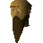 Jaraah | | | | Exam Centre | 1 | 0 |
 Jatix Jatix | | | shop_keeper | Taverly | 1 | 0 |
 Jeed Jeed | | 7 | | Duel Arena | 1 | 0 |
 Jeremy Servil Jeremy Servil | | | | Fight Arena | 1 | 0 |
 Jeremy Servil Jeremy Servil | | | | Fight Arena | 1 | 0 |
 Jerico Jerico | | | | East Ardougne | 1 | 0 |
 Jethick Jethick | | | | West Ardougne | 1 | 0 |
 Jiminua Jiminua | | | shop_keeper | Tai Bwo Wannai | 1 | 0 |
 Joe Joe | | | | Jail | 1 | 0 |
 Joe Joe | | | | Fight Arena | 1 | 0 |
 Jogre Jogre | 53 | 60 | | Tai Bwo Wannai (underground) | 28 | 1 |
 Johnathon Johnathon | | | | Lumber Yard | 1 | 0 |
 Jonny the beard Jonny the beard | 2 | 8 | | River Lum | 1 | 0 |
 Joshua Joshua | | | | Fishing Guild | 1 | 0 |
 Juliet Juliet | | | | Cooks' Guild | 1 | 0 |
 Jungle Forester Jungle Forester | | | | Cairn Isle | 4 | 0 |
 Jungle Forester Jungle Forester | | | | Kharazi Jungle | 5 | 0 |
 Jungle Savage Jungle Savage | 90 | 90 | | Kharazi Jungle | 19 | 0 |
 Jungle spider Jungle spider | 44 | 50 | | Tai Bwo Wannai | 78 | 0 |
 Jungle Wolf Jungle Wolf | 64 | 69 | | Kharazi Jungle | 16 | 0 |
 Justin Servil Justin Servil | | 20 | | Fight Arena | 1 | 0 |
 Kaleb Paramaya Kaleb Paramaya | | | | Shilo Village | 1 | 0 |
 Kalphite Guardian Kalphite Guardian | 141 | 170 | | | 2 | 21 |
 Kalphite Guardian Kalphite Guardian | 141 | 170 | | | 2 | 21 |
 Kalphite Larva Kalphite Larva | | | | | 10 | 0 |
 Kalphite Queen Kalphite Queen | 333 | 255 | | | 1 | 0 |
 Kalphite Queen Kalphite Queen | 296 | | | | 0 | 0 |
 Kalphite Queen Kalphite Queen | 333 | 255 | | | 0 | 19 |
 Kalphite Soldier Kalphite Soldier | 85 | 90 | | | 7 | 19 |
 Kalphite Worker Kalphite Worker | 28 | 40 | | | 13 | 21 |
 Kalphite Worker Kalphite Worker | 28 | 40 | | | 0 | 21 |
 Kalrag Kalrag | 89 | 78 | | Gnome Ball Field (underground) | 1 | 0 |
 Kalron Kalron | | 3 | | Tree Gnome Village | 1 | 0 |
 Kamen Kamen | | | | Gnome Ball Field (underground) | 1 | 0 |
 Kanel Kanel | | | | Cooks' Guild | 1 | 0 |
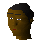 Kangai Mau | | | | Brimhaven | 1 | 0 |
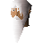 Kaqemeex | | | | Druids' Circle | 1 | 0 |
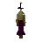 Kardia | | | | | 1 | 0 |
 Katrine Katrine | | | | River Lum | 1 | 0 |
 Kebab seller Kebab seller | | | | Toll Gate | 1 | 0 |
 Kelvin Kelvin | | | | Fight Arena | 1 | 0 |
 Kennith Kennith | | | | Fishing Platform | 1 | 0 |
 Kent Kent | | | | Fishing Platform | 1 | 0 |
 Kharid Scorpion Kharid Scorpion | | | | Taverly (underground) | 1 | 0 |
| Kharid Scorpion | | | | Barbarian Outpost | 1 | 0 |
 Kharid Scorpion Kharid Scorpion | | | | Monastery | 1 | 0 |
 Khazard barman Khazard barman | | | | Fight Arena | 1 | 0 |
 Khazard commander Khazard commander | 48 | 22 | | Battlefield | 2 | 0 |
 Khazard Guard Khazard Guard | 23 | 25 | | Fight Arena | 8 | 0 |
 Khazard Guard Khazard Guard | 23 | 25 | | Fight Arena | 2 | 0 |
 Khazard Guard Khazard Guard | 23 | 25 | | Fight Arena | 1 | 0 |
 Khazard Guard Khazard Guard | 23 | 25 | | Fight Arena | 22 | 0 |
 Khazard Guard Khazard Guard | 25 | 25 | | | 0 | 0 |
 Khazard Ogre Khazard Ogre | 63 | 60 | | Fight Arena | 1 | 0 |
 Khazard Scorpion Khazard Scorpion | 44 | 40 | | Fight Arena | 1 | 0 |
 Khazard trooper Khazard trooper | 19 | 22 | | Battlefield | 25 | 0 |
 Khazard trooper Khazard trooper | 19 | 22 | | Battlefield | 16 | 0 |
 Khazard warlord Khazard warlord | 112 | 170 | | Underground Pass | 1 | 0 |
 Kilron Kilron | | | | Battlefield | 1 | 0 |
 King Arthur King Arthur | | | | Camelot Castle | 1 | 0 |
 King black dragon King black dragon | 276 | 240 | | Sorcerers' Tower (underground) | 1 | 21 |
 King Bolren King Bolren | | | | Tree Gnome Village | 1 | 0 |
 King Lathas King Lathas | | | | East Ardougne | 1 | 0 |
 King Narnode Shareen King Narnode Shareen | | | | Grand Tree (underground) | 2 | 0 |
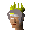 King Percival | | | | | 1 | 0 |
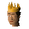 King Roald | | | | Palace | 1 | 0 |
 King Scorpion King Scorpion | 32 | 30 | | Lava Maze | 12 | 0 |
 Kitten Kitten | | | | | 0 | 0 |
 Kitten Kitten | | | petcat | | 0 | 0 |
 Kitten Kitten | | | petcat | | 0 | 0 |
 Kitten Kitten | | | petcat | | 0 | 0 |
 Kitten Kitten | | | petcat | | 0 | 0 |
 Kitten Kitten | | | petcat | | 0 | 0 |
 Kitten Kitten | | | petcat | | 0 | 0 |
 Klank Klank | | | | Gnome Ball Field (underground) | 1 | 0 |
 Klarense Klarense | | | | Port Sarim | 1 | 0 |
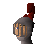 Knight | | | | | 0 | 0 |
 Knight of Ardougne Knight of Ardougne | 46 | 52 | | Zoo | 5 | 0 |
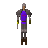 Knight of Ardougne | 46 | 52 | | | 0 | 0 |
 Koftik Koftik | | | | Underground Pass | 1 | 0 |
 Koftik Koftik | | | | Underground Pass (underground) | 1 | 0 |
 Koftik Koftik | | | | Underground Pass (underground) | 1 | 0 |
 Koftik Koftik | | | | | 0 | 0 |
 Koftik Koftik | | | | Observatory (underground) | 1 | 0 |
 Kolodion Kolodion | | | | | 1 | 0 |
 Kolodion Kolodion | | | | | 0 | 0 |
 Kolodion Kolodion | | 3 | kolodion | | 0 | 0 |
 Kolodion Kolodion | | 65 | kolodion | | 0 | 0 |
 Kolodion Kolodion | | 78 | kolodion | | 0 | 0 |
 Kolodion Kolodion | | 78 | kolodion | | 0 | 0 |
 Kolodion Kolodion | 112 | 107 | kolodion | | 0 | 0 |
 Kortan Kortan | | | shop_keeper | Zoo | 1 | 0 |
 Kraka Kraka | 91 | 120 | troll_general | Death Plateau | 1 | 0 |
 Lady Keli Lady Keli | | | | Jail | 1 | 0 |
 Lady Servil Lady Servil | | | | Tree Gnome Village | 1 | 0 |
 Leatherworker Leatherworker | | | | Hemenster | 1 | 0 |
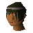 Leela | | | | Draynor Village | 1 | 0 |
 Legends Guard Legends Guard | | | legends_guard | Legends Guild | 1 | 0 |
 Legends Guard Legends Guard | | | legends_guard | Legends Guild | 1 | 0 |
 Leprechaun Leprechaun | 12 | 16 | | | 0 | 0 |
 Lesser demon Lesser demon | 82 | 79 | | Agility Arena (underground) | 33 | 19 |
 Lesser demon Lesser demon | 82 | 79 | | Melzar's Maze (underground) | 1 | 0 |
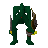 Lizard man | 22 | | | | 0 | 0 |
 Local Local | | | | Fight Arena | 1 | 0 |
 Local Gnome Local Gnome | | 3 | | | 0 | 0 |
 Local Gnome Local Gnome | | 3 | | Tree Gnome Village | 4 | 0 |
 Lord Daquarius Lord Daquarius | 68 | 38 | | Make Over Mage (underground) | 1 | 0 |
 Lord Iban Lord Iban | | 87 | | | 1 | 0 |
 Louie legs Louie legs | | | shop_keeper | Shantay Pass | 1 | 0 |
 Louisa Louisa | | | | Sinclair Mansion | 1 | 0 |
 Lowe Lowe | | | shop_keeper | Varrock | 1 | 0 |
 Lucien Lucien | 14 | 17 | | Palace | 1 | 0 |
 Lucien Lucien | | | | East Ardougne | 1 | 0 |
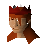 Lucy | | | | Flax | 1 | 0 |
 Lundail Lundail | | | | | 1 | 0 |
 Lunderwin Lunderwin | | | | Lumbridge Swamp (underground) | 1 | 0 |
 Luthas Luthas | | | | Rimmington | 1 | 0 |
 Mad skavid Mad skavid | | | | Gu'Tanoth (underground) | 1 | 0 |
 Magic axe Magic axe | 42 | 44 | | Deserted Keep | 16 | 0 |
 Magic Instructor Magic Instructor | | | | Bedabin Camp | 1 | 0 |
 Magic Store owner Magic Store owner | | 14 | shop_keeper | Wizards' Guild | 1 | 0 |
 Magic tree Magic tree | | | macro_event_ent | | 0 | 0 |
 Make-over mage Make-over mage | | | | Dark Wizards' Tower | 1 | 0 |
 Male slave Male slave | | | | Desert Mining Camp (underground) | 30 | 0 |
| Mammoth | 41 | | | | 0 | 0 |
 Man Man | 2 | 7 | citizen | Lumbridge Swamp | 28 | 18 |
 Man Man | 2 | 7 | citizen | Lumbridge | 9 | 18 |
 Man Man | 2 | 7 | citizen | Edgeville | 14 | 18 |
 Man Man | 2 | 7 | | East Ardougne | 2 | 0 |
 Man Man | 2 | 7 | citizen | Toll Gate | 6 | 18 |
 Man Man | 4 | 13 | | Underground Pass | 5 | 0 |
 Man Man | | | | | 0 | 0 |
 Man Man | | | | West Ardougne | 1 | 0 |
 Man Man | | | | | 0 | 0 |
 Man Man | | | | West Ardougne | 3 | 0 |
 Man Man | | | | West Ardougne | 2 | 0 |
| Man | | | | | 0 | 0 |
 Man Man | 24 | 60 | canafis_citizen | Canifis | 4 | 32 |
 Man Man | 24 | 60 | canafis_citizen | Canifis | 5 | 32 |
 Man Man | 24 | 60 | canafis_citizen | Canifis | 4 | 32 |
 Man Man | | | | Canifis | 1 | 0 |
 Man Man | | | | Toll Gate | 1 | 0 |
 Maple tree Maple tree | | | macro_event_ent | | 0 | 0 |
 Martha Rehnison Martha Rehnison | | | | Combat Training Camp | 1 | 0 |
 Mary Mary | | | | Sinclair Mansion | 1 | 0 |
 Master Chef Master Chef | | | | Tutorial Island | 1 | 0 |
 Master crafter Master crafter | | | | Make Over Mage | 3 | 0 |
 Master fisher Master fisher | | | | Fishing Guild | 1 | 0 |
 Megan Megan | | | | Flax | 1 | 0 |
| Melzar the mad | 43 | 44 | | Melzar's Maze (underground) | 1 | 0 |
 Mercenary Mercenary | 45 | 60 | | Desert Mining Camp | 12 | 0 |
 Mercenary Mercenary | 45 | 60 | | Desert Mining Camp (underground) | 6 | 0 |
 Mercenary Captain Mercenary Captain | 47 | 80 | | Desert Mining Camp | 1 | 0 |
 Merlin Merlin | | | | | 0 | 0 |
| Merlin | | | | | 0 | 0 |
 Milli Rehnison Milli Rehnison | | | | West Ardougne | 1 | 0 |
| Mime | 1 | | | | 1 | 0 |
 Mine cart driver Mine cart driver | | | | Desert Mining Camp | 1 | 0 |
 Mining Instructor Mining Instructor | | | | Tutorial Island (underground) | 1 | 0 |
 Monk Monk | 3 | 5 | | Fight Arena | 4 | 0 |
 Monk Monk | 5 | 15 | | Dark Wizards' Tower | 5 | 0 |
 Monk Monk | | | | Jail | 1 | 0 |
 Monk Monk | 5 | 15 | | Monastery | 6 | 0 |
 Monk of Entrana Monk of Entrana | | | | Dark Wizards' Tower | 3 | 0 |
 Monk of Entrana Monk of Entrana | | | | Port Sarim | 3 | 0 |
 Monk of Zamorak Monk of Zamorak | 22 | 20 | monk_of_zamorak | Chaos Temple | 2 | 0 |
 Monk of Zamorak Monk of Zamorak | 17 | 10 | monk_of_zamorak | Battlefield | 14 | 0 |
 Monk of Zamorak Monk of Zamorak | 45 | 40 | monk_of_zamorak | Catherby (underground) | 6 | 0 |
 Monk of Zamorak Monk of Zamorak | 22 | 20 | | Temple | 4 | 0 |
 Monk of Zamorak Monk of Zamorak | 17 | 10 | | Temple | 3 | 0 |
 Monk of Zamorak Monk of Zamorak | 30 | 25 | | Temple | 3 | 0 |
 Monkey Monkey | 3 | 6 | | Ship Yard | 60 | 0 |
 Morgan Morgan | | | | Market | 1 | 0 |
 Morgan Le Faye Morgan Le Faye | | | | | 0 | 0 |
 Morris Morris | | | | Hemenster | 1 | 0 |
 Mosol Rei Mosol Rei | | | | Kharazi Jungle | 1 | 0 |
 Moss giant Moss giant | 42 | 60 | | Necromancer | 22 | 26 |
 Mountain Dwarf Mountain Dwarf | | | | White Wolf Mountain | 2 | 0 |
 Mountain Goat Mountain Goat | | | | Death Plateau | 2 | 0 |
 Mountain Goat Mountain Goat | | | | Trollheim | 8 | 0 |
 Mountain Goat Mountain Goat | | | | Troll Stronghold (underground) | 2 | 0 |
 Mountain Troll Mountain Troll | 69 | 90 | mountain_troll | Death Plateau | 6 | 0 |
 Mountain Troll Mountain Troll | 69 | 90 | mountain_troll | Death Plateau | 6 | 0 |
 Mountain Troll Mountain Troll | 69 | 90 | mountain_troll | Death Plateau | 4 | 0 |
 Mountain Troll Mountain Troll | 69 | 90 | mountain_troll | Troll Stronghold (underground) | 8 | 0 |
 Mountain Troll Mountain Troll | 69 | 90 | mountain_troll | Troll Stronghold (underground) | 6 | 0 |
 Mountain Troll Mountain Troll | 69 | 90 | mountain_troll | Troll Stronghold (underground) | 7 | 0 |
 Mountain Troll Mountain Troll | 69 | 90 | mountain_troll | Troll Stronghold (underground) | 6 | 0 |
 Mountain Troll Mountain Troll | 71 | 90 | mountain_troll | Troll Stronghold (underground) | 4 | 0 |
 Mounted terrorbird gnome Mounted terrorbird gnome | 31 | 36 | | Agility Training Area | 15 | 0 |
 Mounted terrorbird gnome Mounted terrorbird gnome | 49 | 55 | | Battlefield | 6 | 0 |
 Mourner Mourner | 11 | 19 | | West Ardougne | 4 | 0 |
 Mourner Mourner | 24 | 25 | | West Ardougne | 9 | 0 |
 Mourner Mourner | 18 | 13 | | West Ardougne | 5 | 0 |
 Mourner Mourner | 24 | 25 | | West Ardougne | 6 | 0 |
 Mourner Mourner | 13 | 19 | | West Ardougne | 2 | 0 |
 Mourner Mourner | 12 | 13 | | West Ardougne | 4 | 0 |
 Mourner Mourner | | | | West Ardougne | 4 | 0 |
 Mourner Mourner | | | | West Ardougne | 5 | 0 |
 Mourner Mourner | | | | Battlefield | 4 | 0 |
 Mourner Mourner | | | | East Ardougne | 1 | 0 |
 Mouse Mouse | | | | | 0 | 0 |
 Mubariz Mubariz | | | | Toll Gate | 1 | 0 |
 Mugger Mugger | 6 | 8 | | Rimmington (underground) | 7 | 14 |
| Mummy | 47 | | | | 0 | 0 |
 Murphy Murphy | | | | Port Khazard | 1 | 0 |
| Murphy | | | | | 1 | 0 |
 Murphy Murphy | | | | | 1 | 0 |
 Murphy Murphy | | | | | 1 | 0 |
 Mushroom Mushroom | | | | Troll Stronghold | 1 | 0 |
| Mysterious Old Man | | | | | 0 | 0 |
 Nature Spirit Nature Spirit | | | | | 0 | 0 |
 Nazastarool Nazastarool | 91 | 70 | | | 0 | 0 |
 Nazastarool Nazastarool | 68 | 70 | | | 0 | 0 |
 Nazastarool Nazastarool | 93 | 80 | | | 0 | 0 |
 Necromancer Necromancer | 26 | 40 | | Necromancer | 1 | 26 |
 Ned Ned | | | | Market | 1 | 0 |
 Ned Ned | | | | Agility Arena | 2 | 0 |
 Nezikchened Nezikchened | 187 | 150 | | | 0 | 0 |
 Nilhoof Nilhoof | | | | Gnome Ball Field (underground) | 1 | 0 |
 Nora T. Hagg Nora T. Hagg | | | | Taverly | 1 | 0 |
 Noterazzo Noterazzo | | | shop_keeper | Bandit Camp | 1 | 0 |
 Nulodion Nulodion | | | | Dwarven Mine | 1 | 0 |
 Nurmof Nurmof | | | shop_keeper | Dwarven Mine (underground) | 1 | 0 |
 Nurse Sarah Nurse Sarah | | | | Battlefield | 1 | 0 |
 Oak Oak | | | macro_event_ent | | 0 | 0 |
 Obli Obli | | | shop_keeper | Kharazi Jungle | 1 | 0 |
 Observatory assistant Observatory assistant | | | | Observatory | 1 | 0 |
 Observatory professor Observatory professor | | | | Observatory | 1 | 0 |
 Observatory professor Observatory professor | | | | Observatory | 1 | 0 |
 Ocga Ocga | 5 | 10 | citizen_burthorpe | Chaos Temple | 1 | 18 |
 Og Og | | | | Tree Gnome Village | 1 | 0 |
| Ogre | 63 | 60 | | Combat Training Camp | 8 | 0 |
 Ogre Ogre | 53 | 60 | | Gu'Tanoth | 54 | 0 |
 Ogre Ogre | 53 | 60 | | Gu'Tanoth | 15 | 0 |
 Ogre chieftain Ogre chieftain | 81 | 60 | | Wizards' Guild (underground) | 11 | 0 |
 Ogre guard Ogre guard | 83 | 80 | | | 0 | 0 |
 Ogre guard Ogre guard | 83 | 80 | | Gu'Tanoth | 2 | 0 |
 Ogre guard Ogre guard | 83 | 80 | | Gu'Tanoth | 2 | 0 |
 Ogre guard Ogre guard | 83 | 80 | | Gu'Tanoth | 2 | 0 |
 Ogre guard Ogre guard | 83 | 80 | | Gu'Tanoth | 2 | 0 |
 Ogre merchant Ogre merchant | 70 | 60 | shop_keeper | Gu'Tanoth | 1 | 0 |
 Ogre shaman Ogre shaman | 113 | 99 | | Wizards' Guild (underground) | 6 | 0 |
 Ogre trader Ogre trader | 70 | 60 | shop_keeper | Gu'Tanoth | 1 | 0 |
 Ogre trader Ogre trader | 70 | 60 | | Gu'Tanoth | 1 | 0 |
 Ogre trader Ogre trader | 70 | 60 | | Gu'Tanoth | 1 | 0 |
 Omart Omart | | | | Battlefield | 1 | 0 |
 Oomlie Bird Oomlie Bird | 46 | 40 | | Kharazi Jungle | 32 | 0 |
 Oracle Oracle | | | | Black Knights' Castle | 1 | 0 |
 Orc Orc | 20 | 29 | | Tree Gnome Village | 2 | 0 |
 Osman Osman | | | | Toll Gate | 1 | 0 |
 Othainian Othainian | 91 | 87 | | | 1 | 0 |
 Otherworldly being Otherworldly being | 64 | 66 | | Wizards' Tower (underground) | 6 | 12 |
 Overgrown cat Overgrown cat | | | petcat | | 0 | 0 |
 Overgrown cat Overgrown cat | | | petcat | | 0 | 0 |
 Overgrown cat Overgrown cat | | | petcat | | 0 | 0 |
 Overgrown cat Overgrown cat | | | petcat | | 0 | 0 |
 Overgrown cat Overgrown cat | | | petcat | | 0 | 0 |
 Overgrown cat Overgrown cat | | | petcat | | 0 | 0 |
 Oziach Oziach | | | | Monastery | 1 | 0 |
 Paladin Paladin | 62 | 57 | | East Ardougne | 22 | 16 |
| Paladin | 59 | 13 | | | 0 | 0 |
 Panning guide Panning guide | | | | Exam Centre | 1 | 0 |
| Party Pete | | | | Flax | 1 | 0 |
 Peasant Peasant | | | | | 5 | 0 |
| Peasant | | | | | 5 | 0 |
 Pee Hat Pee Hat | 91 | 120 | troll_general | Death Plateau | 1 | 0 |
 Peksa Peksa | | | shop_keeper | Barbarian Village | 1 | 0 |
 Penda Penda | 5 | 10 | citizen_burthorpe | Chaos Temple | 1 | 18 |
 Penguin Penguin | 2 | 4 | | Zoo | 3 | 0 |
 Philipe Carnillean Philipe Carnillean | | | | Zoo | 1 | 0 |
 Philop Philop | | | | Cooks' Guild | 1 | 0 |
 Pierre Pierre | | | | Sinclair Mansion | 1 | 0 |
 Pirate Pirate | 23 | 20 | pirate | Rimmington | 1 | 21 |
 Pirate Pirate | 23 | 20 | pirate | Agility Arena | 18 | 21 |
 Pirate Pirate | 26 | 23 | pirate | Pirates' Hideout | 21 | 21 |
 Pirate Pirate | 23 | 20 | pirate | | 0 | 21 |
 Pirate Guard Pirate Guard | 19 | 25 | | Brimhaven | 7 | 0 |
 Pirate Jackie the Fruit Pirate Jackie the Fruit | | | | Agility Arena | 1 | 0 |
 Pit Scorpion Pit Scorpion | 28 | 32 | | Legends Guild (underground) | 24 | 0 |
 Poison Salesman Poison Salesman | | | | Seers' Village | 2 | 0 |
 Poison Scorpion Poison Scorpion | 20 | 23 | | Necromancer | 12 | 0 |
 Poison spider Poison spider | 64 | 64 | | Demonic Ruins | 101 | 0 |
| Poison spider | 31 | 25 | | | 0 | 0 |
 Priest Priest | | | | Zoo | 1 | 0 |
 Priest Priest | | | | West Ardougne | 1 | 0 |
| Prince Ali | | | | Jail | 1 | 0 |
| Prince Ali | | | | | 0 | 0 |
 Professor Oddenstein Professor Oddenstein | | | | Draynor Manor | 1 | 0 |
 Quest Guide Quest Guide | | | | Wizards' Tower | 1 | 0 |
 Radimus Erkle Radimus Erkle | | | | Legends Guild | 2 | 0 |
 Ranael Ranael | | | shop_keeper | Shantay Pass | 1 | 0 |
 Ranalph Devere Ranalph Devere | 92 | 130 | | | 4 | 0 |
 Ranging Guild Doorman Ranging Guild Doorman | | 50 | | Hemenster | 1 | 0 |
 Rantz Rantz | | | | Wizards' Guild | 1 | 0 |
 Rashiliyia Rashiliyia | | | | | 0 | 0 |
 Rat Rat | 1 | 2 | | Underground Pass | 381 | 0 |
 Recruiter Recruiter | | | | West Ardougne | 1 | 0 |
 Red dragon Red dragon | 152 | 140 | | Red Dragon Isle | 4 | 21 |
 Redbeard Frank Redbeard Frank | | | | Market | 1 | 0 |
 Reldo Reldo | | | | Palace | 1 | 0 |
 Remsai Remsai | | | | Tree Gnome Village | 1 | 0 |
 Renegade Knight Renegade Knight | 37 | 48 | | Keep Le Faye | 8 | 0 |
 Restless ghost Restless ghost | | | | | 0 | 0 |
 River troll River troll | 14 | 25 | macro_event_river_troll | | 0 | 27 |
 River troll River troll | 29 | 40 | macro_event_river_troll | | 0 | 27 |
 River troll River troll | 49 | 60 | macro_event_river_troll | | 0 | 27 |
 River troll River troll | 79 | 85 | macro_event_river_troll | | 0 | 27 |
 River troll River troll | 120 | 120 | macro_event_river_troll | | 0 | 27 |
 River troll River troll | 159 | 170 | macro_event_river_troll | | 0 | 27 |
 Roachey Roachey | | | shop_keeper | Fishing Guild | 1 | 0 |
 Roavar Roavar | | | | Canifis | 1 | 0 |
 Rock Rock | 111 | 140 | troll_general | Death Plateau | 1 | 0 |
 Rock Golem Rock Golem | 14 | 25 | macro_event_rock_golem | | 0 | 27 |
 Rock Golem Rock Golem | 29 | 40 | macro_event_rock_golem | | 0 | 27 |
 Rock Golem Rock Golem | 49 | 60 | macro_event_rock_golem | | 0 | 27 |
 Rock Golem Rock Golem | 79 | 85 | macro_event_rock_golem | | 0 | 27 |
 Rock Golem Rock Golem | 120 | 120 | macro_event_rock_golem | | 0 | 27 |
 Rock Golem Rock Golem | 159 | 170 | macro_event_rock_golem | | 0 | 27 |
 Rogue Rogue | 15 | 17 | | Rogues' Castle | 22 | 18 |
 Romeo Romeo | | | | Varrock | 1 | 0 |
 Rometti Rometti | | | shop_keeper | Grand Tree | 1 | 0 |
 Rommik Rommik | | | shop_keeper | Rimmington | 1 | 0 |
 Rooster Rooster | 2 | 7 | chicken | Death Plateau | 1 | 2 |
 Rowdy Guard Rowdy Guard | 43 | 60 | | Desert Mining Camp (underground) | 9 | 0 |
 Rowdy slave Rowdy slave | 10 | 16 | | Desert Mining Camp (underground) | 2 | 0 |
 RPDT employee RPDT employee | | | | Zoo | 3 | 0 |
 Rufus Rufus | | | shop_keeper | Canifis | 1 | 0 |
 RuneScape Guide RuneScape Guide | | | | Tutorial Island | 1 | 0 |
 Saba Saba | | | | | 1 | 0 |
 Sabeil Sabeil | | 7 | | Duel Arena | 1 | 0 |
| Sabreen | | | healer | Exam Centre | 1 | 0 |
 Salarin the twisted Salarin the twisted | 70 | 70 | | Fight Arena (underground) | 1 | 14 |
 San Tojalon San Tojalon | 106 | 120 | | | 4 | 0 |
 Sanfew Sanfew | | | | Taverly | 1 | 0 |
 Sbott Sbott | | | | Canifis | 1 | 0 |
 Scared skavid Scared skavid | | | | Gu'Tanoth (underground) | 1 | 0 |
 Scavvo Scavvo | | | shop_keeper | River Lum | 1 | 0 |
 Scorpion Scorpion | 14 | 17 | | Park (underground) | 62 | 0 |
 Sea slug Sea slug | | | | Fishing Platform | 26 | 0 |
 Seaman Lorris Seaman Lorris | | | sailor | Port Sarim | 1 | 0 |
 Seaman Thresnor Seaman Thresnor | | | sailor | Port Sarim | 1 | 0 |
 Sedridor Sedridor | | | | Wizards' Tower (underground) | 1 | 0 |
 Seer Seer | | | | Seers' Village | 4 | 0 |
 Seravel Seravel | | | | Shilo Village | 1 | 0 |
 Sergeant Sergeant | | | | Burthorpe | 1 | 0 |
 Sergeant Sergeant | | | | Burthorpe | 1 | 0 |
 Servant Servant | 5 | 10 | | Burthorpe | 1 | 0 |
| Seth | | | | | 0 | 0 |
 Shade Shade | 14 | 25 | macro_event_shade | | 0 | 2 |
 Shade Shade | 29 | 40 | macro_event_shade | | 0 | 2 |
 Shade Shade | 49 | 60 | macro_event_shade | | 0 | 2 |
 Shade Shade | 79 | 85 | macro_event_shade | | 0 | 2 |
 Shade Shade | 120 | 120 | macro_event_shade | | 0 | 2 |
 Shade Shade | 159 | 170 | macro_event_shade | | 0 | 2 |
 Shadow spider Shadow spider | 52 | 55 | | Pirates' Hideout (underground) | 17 | 0 |
 Shadow warrior Shadow warrior | 48 | 67 | | Legends Guild (underground) | 11 | 14 |
 Shamus Shamus | | 16 | | | 0 | 0 |
 Shantay Shantay | | | | Shantay Pass | 1 | 0 |
 Shantay Guard Shantay Guard | 22 | 32 | | Shantay Pass | 3 | 0 |
 Shantay Guard Shantay Guard | 22 | 32 | | Shantay Pass | 1 | 0 |
 Shark Shark | 1 | | | Ship Yard | 2 | 0 |
 Shark Shark | | | | | 1 | 0 |
 Shark Shark | | | | | 1 | 0 |
 Sheep Sheep | | | | River Lum | 5 | 0 |
 Sheep Sheep | | | | Fishing Guild | 52 | 0 |
 Shilop Shilop | | | | Varrock | 1 | 0 |
 Shipyard worker Shipyard worker | 11 | 10 | shipyardworker | Ship Yard | 5 | 0 |
 Shipyard worker Shipyard worker | 11 | 10 | shipyardworker | Ship Yard | 9 | 0 |
 Shipyard worker Shipyard worker | | 10 | shipyardworker | Ship Yard | 1 | 0 |
 Shop assistant Shop assistant | | | shop_keeper | Shantay Pass | 1 | 0 |
 Shop assistant Shop assistant | | | shop_keeper | Monastery | 1 | 0 |
 Shop assistant Shop assistant | | | shop_keeper | White Knights' Castle | 1 | 0 |
 Shop assistant Shop assistant | | | shop_keeper | Rimmington | 1 | 0 |
 Shop assistant Shop assistant | | | shop_keeper | Lumbridge | 1 | 0 |
 Shop assistant Shop assistant | | | shop_keeper | Rimmington | 1 | 0 |
 Shop assistant Shop assistant | | | shop_keeper | Varrock | 1 | 0 |
 Shop assistant Shop assistant | | | shop_keeper | River Lum | 1 | 0 |
 Shop keeper Shop keeper | | | shop_keeper | Toll Gate | 1 | 0 |
 Shop keeper Shop keeper | | | shop_keeper | Port Khazard | 2 | 0 |
 Shop keeper Shop keeper | | | shop_keeper | Combat Training Camp | 1 | 0 |
 Shop keeper Shop keeper | | | shop_keeper | Monastery | 1 | 0 |
 Shop keeper Shop keeper | | | shop_keeper | White Knights' Castle | 1 | 0 |
 Shop keeper Shop keeper | | | shop_keeper | Rimmington | 1 | 0 |
 Shop keeper Shop keeper | | | shop_keeper | Lumbridge | 1 | 0 |
 Shop keeper Shop keeper | | | shop_keeper | Rimmington | 1 | 0 |
 Shop keeper Shop keeper | | | shop_keeper | Varrock | 1 | 0 |
 Shop keeper Shop keeper | | | shop_keeper | River Lum | 1 | 0 |
 Siegfried Erkle Siegfried Erkle | | | shop_keeper | Legends Guild | 1 | 0 |
 Sigbert the Adventurer Sigbert the Adventurer | | | | Wizards' Guild (underground) | 1 | 0 |
 Silk merchant Silk merchant | | | | Zoo | 1 | 0 |
 Silk trader Silk trader | | | | Toll Gate | 1 | 0 |
 Silver merchant Silver merchant | | | shop_keeper | Zoo | 1 | 0 |
 Sinclair Guard dog Sinclair Guard dog | 1 | | | Sinclair Mansion | 1 | 0 |
 Sir Amik Varze Sir Amik Varze | | | | White Knights' Castle | 1 | 0 |
 Sir Bedivere Sir Bedivere | | | | Camelot Castle | 1 | 0 |
 Sir Carl Sir Carl | 62 | 57 | | Underground Pass (underground) | 1 | 16 |
 Sir Gawain Sir Gawain | | | | Camelot Castle | 1 | 0 |
 Sir Harry Sir Harry | 62 | 57 | | Underground Pass (underground) | 1 | 16 |
 Sir Jerro Sir Jerro | 62 | 57 | | Underground Pass (underground) | 1 | 16 |
 Sir Kay Sir Kay | | | | Camelot Castle | 1 | 0 |
 Sir Lancelot Sir Lancelot | | | | Camelot Castle | 1 | 0 |
 Sir Lucan Sir Lucan | | | | Camelot Castle | 1 | 0 |
 Sir Mordred Sir Mordred | 39 | 38 | | Keep Le Faye | 1 | 0 |
 Sir Palomedes Sir Palomedes | | | | Camelot Castle | 1 | 0 |
 Sir Pelleas Sir Pelleas | | | | Camelot Castle | 1 | 0 |
 Sir Percival Sir Percival | | | | | 0 | 0 |
 Sir Prysin Sir Prysin | | | | Palace | 1 | 0 |
 Sir Tristram Sir Tristram | | | | Camelot Castle | 1 | 0 |
 Sir Vyvin Sir Vyvin | | | | White Knights' Castle | 1 | 0 |
 Skavid Skavid | 2 | 6 | | | 0 | 0 |
 Skavid Skavid | | | | Gu'Tanoth (underground) | 1 | 0 |
 Skavid Skavid | | | | Gu'Tanoth (underground) | 1 | 0 |
 Skavid Skavid | | | | Gu'Tanoth (underground) | 1 | 0 |
 Skavid Skavid | | | | Gu'Tanoth (underground) | 1 | 0 |
 Skavid Skavid | | | | | 0 | 0 |
 Skeleton Skeleton | 25 | 17 | | Dark Knight Fortress | 67 | 22 |
 Skeleton Skeleton | 21 | 24 | | Edgeville (underground) | 13 | 22 |
 Skeleton Skeleton | 22 | 29 | | Bone Yard | 74 | 19 |
 Skeleton Skeleton | 45 | 59 | | McGrubor's Wood (underground) | 38 | 19 |
 Skeleton Skeleton | 22 | 29 | | Melzar's Maze | 6 | 0 |
| Skeleton | 13 | 18 | | | 0 | 0 |
 Skeleton Mage Skeleton Mage | 16 | 17 | | Coal Trucks (underground) | 4 | 0 |
 Slave Slave | | | | Underground Pass (underground) | 1 | 0 |
 Slave Slave | | | | Underground Pass (underground) | 2 | 0 |
 Slave Slave | | | | Underground Pass (underground) | 1 | 0 |
 Slave Slave | | | | Underground Pass (underground) | 1 | 0 |
 Slave Slave | | | | Underground Pass (underground) | 2 | 0 |
 Slave Slave | | | | Underground Pass (underground) | 2 | 0 |
 Slave Slave | | | | Underground Pass (underground) | 1 | 0 |
 Snake Snake | 5 | 6 | | Tai Bwo Wannai | 51 | 0 |
 Soldier Soldier | 28 | 22 | | Yanille | 26 | 20 |
 Soldier Soldier | | | | Burthorpe | 10 | 0 |
 Soldier Soldier | | | | Heros' Guild | 2 | 0 |
 Soldier Soldier | 48 | 50 | | Burthorpe | 5 | 0 |
 Soldier Soldier | | | | Burthorpe | 1 | 0 |
 Soldier Soldier | | | | Burthorpe | 1 | 0 |
 Soldier Soldier | | | | Burthorpe | 1 | 0 |
 Soldier Soldier | | | | Death Plateau | 1 | 0 |
 Souless Souless | 18 | 24 | | Gnome Ball Field (underground) | 58 | 0 |
 Speedy Keith Speedy Keith | 34 | 37 | bandit_camp_leader | Bandit Camp | 1 | 18 |
 Spice seller Spice seller | | | shop_keeper | Zoo | 1 | 0 |
 Spider Spider | 1 | 2 | | Deserted Keep | 76 | 0 |
 Spider Spider | 1 | 2 | | Gnome Ball Field (underground) | 50 | 0 |
 Spirit of Scorpius Spirit of Scorpius | | | | Battlefield | 1 | 0 |
 Squire Squire | | | | White Knights' Castle | 1 | 0 |
 Stanford Stanford | | | | Sinclair Mansion | 1 | 0 |
 Stankers Stankers | | | | Coal Trucks | 1 | 0 |
 Stick Stick | 104 | 135 | troll_general | Death Plateau | 1 | 0 |
| Strange plant | | 200 | | | 0 | 0 |
 Strange plant Strange plant | | 200 | | | 0 | 0 |
| Strange watcher | | | | | 1 | 0 |
| Strange watcher | | | | | 1 | 0 |
| Strange watcher | | | | | 1 | 0 |
 Straven Straven | 23 | 20 | | River Lum (underground) | 1 | 0 |
 Student Student | | | | Dig Site | 4 | 0 |
 Student Student | | | | Dig Site | 4 | 0 |
 Student Student | | | | Dig Site | 4 | 0 |
| Suit of armour | 19 | 29 | | | 0 | 0 |
 Summoned Zombie Summoned Zombie | 13 | 22 | | | 0 | 0 |
 Survival Expert Survival Expert | | | | Tutorial Island | 1 | 0 |
 Swamp toad Swamp toad | | | | Gu'Tanoth | 17 | 0 |
| Swarm | | 255 | | | 0 | 0 |
 Tafani Tafani | | | healer | Duel Arena | 1 | 0 |
 Tanner Tanner | | | | Make Over Mage | 2 | 0 |
 Tea seller Tea seller | | | | Palace | 1 | 0 |
 Ted Rehnison Ted Rehnison | | | | Combat Training Camp | 1 | 0 |
| Temple guardian | 30 | 45 | | Temple (underground) | 1 | 0 |
 Tenzing Tenzing | | | | Death Plateau | 1 | 0 |
 Terrorbird Terrorbird | 28 | 34 | | Gnome Ball Field | 10 | 0 |
| The Fisher King | | | | | 1 | 0 |
 The Lady of the Lake The Lady of the Lake | | | | Taverly | 1 | 0 |
 Thessalia Thessalia | | | shop_keeper | Varrock | 1 | 0 |
 Thief Thief | 16 | 17 | | River Lum (underground) | 18 | 18 |
 Thief Thief | 14 | 17 | | Battlefield (underground) | 2 | 18 |
 Thormac Thormac | | | | Sorcerers' Tower | 1 | 0 |
 Thrantax The Mighty Thrantax The Mighty | 92 | 80 | | | 0 | 0 |
 Thrower Troll Thrower Troll | 67 | 95 | troll_thrower | Death Plateau | 1 | 0 |
 Thrower Troll Thrower Troll | 67 | 95 | troll_thrower | Death Plateau | 1 | 0 |
 Thrower Troll Thrower Troll | 67 | 95 | troll_thrower | Death Plateau | 1 | 0 |
 Thrower Troll Thrower Troll | 67 | 95 | troll_thrower | Death Plateau | 1 | 0 |
 Thrower Troll Thrower Troll | 67 | 95 | troll_thrower | Death Plateau | 2 | 0 |
 Thrower Troll Thrower Troll | 68 | 95 | troll_thrower | Trollheim | 1 | 0 |
 Thrower Troll Thrower Troll | 68 | 95 | troll_thrower | Trollheim | 1 | 0 |
 Thrower Troll Thrower Troll | 68 | 95 | troll_thrower | Trollheim | 1 | 0 |
 Thrower Troll Thrower Troll | 68 | 95 | troll_thrower | Trollheim | 1 | 0 |
 Thrower Troll Thrower Troll | 68 | 95 | troll_thrower | Trollheim | 1 | 0 |
 Thug Thug | 10 | 18 | | Chaos Temple | 18 | 17 |
 Thurgo Thurgo | | | | Rimmington | 1 | 0 |
 Ticket Merchant Ticket Merchant | | | | Hemenster | 2 | 0 |
 Toban Toban | | | | Gu'Tanoth | 1 | 0 |
 Tostig Tostig | | | shop_keeper | Burthorpe | 1 | 0 |
 Tower Advisor Tower Advisor | | | tower_advisor | Hemenster | 1 | 0 |
 Tower Advisor Tower Advisor | | | tower_advisor | Hemenster | 1 | 0 |
 Tower Advisor Tower Advisor | | | tower_advisor | Hemenster | 1 | 0 |
 Tower Advisor Tower Advisor | | | tower_advisor | Hemenster | 1 | 0 |
| Tower Archer | 19 | 30 | | | 0 | 0 |
| Tower Archer | 34 | 50 | | | 0 | 0 |
| Tower Archer | 49 | 70 | | | 0 | 0 |
| Tower Archer | 64 | 90 | | | 0 | 0 |
 Tower guard Tower guard | 28 | 22 | | Yanille | 5 | 20 |
 Traiborn Traiborn | | | | Wizards' Tower | 1 | 0 |
 Tramp Tramp | 2 | 7 | | Palace | 1 | 0 |
 Tramp Tramp | | | | River Lum | 1 | 0 |
 Tree Tree | | 250 | | Draynor Manor | 14 | 0 |
 Tree Tree | | | macro_event_ent | | 0 | 0 |
 Tree Tree | | | macro_event_ent | | 0 | 0 |
 Tree spirit Tree spirit | 14 | 25 | macro_event_dryad | | 0 | 12 |
 Tree spirit Tree spirit | 29 | 40 | macro_event_dryad | | 0 | 12 |
 Tree spirit Tree spirit | 49 | 60 | macro_event_dryad | | 0 | 12 |
 Tree spirit Tree spirit | 79 | 85 | macro_event_dryad | | 0 | 12 |
 Tree spirit Tree spirit | 120 | 120 | macro_event_dryad | | 0 | 12 |
 Tree spirit Tree spirit | 159 | 170 | macro_event_dryad | | 0 | 12 |
 Tree spirit Tree spirit | 101 | 85 | | | 0 | 0 |
 Tribal Weapon Salesman Tribal Weapon Salesman | | | shop_keeper | Hemenster | 1 | 0 |
 Tribesman Tribesman | 32 | 39 | | Brimhaven | 21 | 22 |
 Trobert Trobert | | 13 | | Agility Arena | 1 | 0 |
 Troll Troll | 69 | 90 | | | 0 | 0 |
 Troll General Troll General | 113 | 140 | troll_general | Troll Stronghold (underground) | 1 | 0 |
 Troll General Troll General | 113 | 140 | troll_general | Troll Stronghold (underground) | 1 | 0 |
 Troll General Troll General | 113 | 140 | troll_general | Troll Stronghold (underground) | 1 | 0 |
 Troll Spectator Troll Spectator | 71 | 90 | troll_spectator | Death Plateau | 1 | 0 |
 Troll Spectator Troll Spectator | 71 | 90 | troll_spectator | Trollheim | 1 | 0 |
 Troll Spectator Troll Spectator | 71 | 90 | troll_spectator | Death Plateau | 1 | 0 |
 Troll Spectator Troll Spectator | 71 | 90 | troll_spectator | Death Plateau | 1 | 0 |
 Troll Spectator Troll Spectator | 71 | 90 | troll_spectator | Death Plateau | 1 | 0 |
 Troll Spectator Troll Spectator | 71 | 90 | troll_spectator | Death Plateau | 1 | 0 |
 Troll Spectator Troll Spectator | 71 | 90 | troll_spectator | Death Plateau | 1 | 0 |
 Trufitus Trufitus | | | | Tai Bwo Wannai | 1 | 0 |
| Twig | | | | | 0 | 0 |
 Twig Twig | 71 | 90 | mountain_troll | | 0 | 0 |
 Twig Twig | 71 | 90 | mountain_troll | Troll Stronghold (underground) | 1 | 0 |
 Ugthanki Ugthanki | 42 | 45 | | Shantay Pass | 25 | 0 |
 Ulizius Ulizius | | | | Temple | 1 | 0 |
 Undead One Undead One | 68 | 47 | undead_one | Kharazi Jungle (underground) | 12 | 0 |
 Undead One Undead One | 61 | 47 | undead_one | Kharazi Jungle (underground) | 9 | 0 |
 Undead One Undead One | 68 | 47 | undead_one | Kharazi Jungle (underground) | 18 | 0 |
 Undead One Undead One | 73 | 59 | undead_one | Kharazi Jungle (underground) | 27 | 0 |
 Unferth Unferth | 6 | 10 | citizen_burthorpe | Chaos Temple | 1 | 18 |
 Ungadulu Ungadulu | 70 | 65 | | Kharazi Jungle (underground) | 1 | 0 |
 Ungadulu Ungadulu | 169 | 150 | | | 0 | 0 |
 Unicorn Unicorn | 15 | 19 | unicorn | Entrana | 17 | 0 |
 Unicorn Unicorn | 15 | 19 | | Observatory (underground) | 1 | 0 |
 Valaine Valaine | | | shop_keeper | River Lum | 1 | 0 |
 Velrak the explorer Velrak the explorer | | | | Make Over Mage (underground) | 1 | 0 |
 Veronica Veronica | | | | Draynor Manor | 1 | 0 |
 Vigroy Vigroy | | | | Kharazi Jungle | 1 | 0 |
 Viyeldi Viyeldi | 79 | 80 | | | 0 | 0 |
| Warrior | | | | Jail | 1 | 0 |
 Warrior woman Warrior woman | 24 | 20 | | Fishing Guild | 11 | 0 |
| Watchman | 33 | 22 | | Yanille | 4 | 0 |
 Watchman Watchman | 14 | 20 | macro_event_watchman | | 0 | 18 |
 Watchman Watchman | 29 | 40 | macro_event_watchman | | 0 | 18 |
 Watchman Watchman | 49 | 60 | macro_event_watchman | | 0 | 18 |
 Watchman Watchman | 79 | 85 | macro_event_watchman | | 0 | 18 |
 Watchman Watchman | 120 | 120 | macro_event_watchman | | 0 | 18 |
 Watchman Watchman | 159 | 170 | macro_event_watchman | | 0 | 18 |
 Watchtower wizard Watchtower wizard | | | | Yanille | 8 | 0 |
 Water elemental Water elemental | 34 | 30 | | Camelot Castle (underground) | 7 | 0 |
 Wayne Wayne | | | shop_keeper | White Knights' Castle | 1 | 0 |
 Weakened Delrith Weakened Delrith | 1 | | | | 0 | 0 |
| Weapon poison salesman | | | | | 0 | 0 |
 Weaponsmaster Weaponsmaster | 23 | 20 | | River Lum | 1 | 0 |
| Weird Old Man | | | | Shantay Pass | 1 | 0 |
 White Knight White Knight | 36 | 52 | | White Knights' Castle | 34 | 27 |
 White Knight White Knight | 36 | 52 | | Chaos Temple | 1 | 0 |
 White wolf White wolf | 25 | 34 | | Taverly | 8 | 0 |
 White wolf White wolf | 38 | 44 | | White Wolf Mountain | 14 | 0 |
 Willow Willow | | | macro_event_ent | | 0 | 0 |
| Willow the wisp | | | | Canifis | 68 | 0 |
 Wilough Wilough | | | | Varrock | 1 | 0 |
 Winelda Winelda | | | | McGrubor's Wood (underground) | 1 | 0 |
 Wistan Wistan | | | shop_keeper | Chaos Temple | 1 | 0 |
 Witch Witch | 25 | 10 | witch | Draynor Manor | 1 | 0 |
 Witch Witch | 25 | 10 | witch | Shantay Pass | 1 | 0 |
 Witch Witch | | | | Black Knights' Castle | 1 | 0 |
| Witches cat | | | | | 1 | 0 |
 Witches experiment Witches experiment | 19 | 21 | witches_experiment | | 0 | 0 |
 Witches experiment fourth form Witches experiment fourth form | 53 | 51 | witches_experiment | | 0 | 0 |
 Witches experiment second form Witches experiment second form | 30 | 31 | witches_experiment | | 0 | 0 |
 Witches experiment third form Witches experiment third form | 42 | 41 | witches_experiment | | 0 | 0 |
 Wizard Wizard | 9 | 14 | | Wizards' Guild | 15 | 26 |
 Wizard Wizard | | | | Jail | 1 | 0 |
 Wizard Cromperty Wizard Cromperty | | | | Legends Guild | 1 | 0 |
| Wizard Distentor | | | | Wizards' Guild | 1 | 0 |
| Wizard Frumscone | | 14 | | Wizards' Guild (underground) | 1 | 0 |
 Wizard Grayzag Wizard Grayzag | 41 | 34 | | Wizards' Tower | 1 | 0 |
 Wizard Mizgog Wizard Mizgog | | 3 | | Wizards' Tower | 1 | 0 |
 Wolf Wolf | 64 | 69 | | Underground Pass | 33 | 0 |
 Wolf Wolf | 25 | 34 | | White Wolf Mountain | 6 | 0 |
 Wolfman Wolfman | 88 | 100 | werewolf | | 0 | 0 |
 Wolfman Wolfman | 88 | 100 | werewolf | | 0 | 0 |
 Wolfman Wolfman | 88 | 100 | werewolf | | 0 | 0 |
 Wolfwoman Wolfwoman | 88 | 100 | werewolf | | 0 | 0 |
 Wolfwoman Wolfwoman | 88 | 100 | werewolf | | 0 | 0 |
 Wolfwoman Wolfwoman | 88 | 100 | werewolf | | 0 | 0 |
 Woman Woman | 2 | 7 | citizen | Seers' Village | 10 | 18 |
 Woman Woman | 2 | 7 | citizen | Seers' Village | 6 | 18 |
 Woman Woman | 2 | 7 | citizen | Park | 3 | 18 |
 Woman Woman | 2 | 7 | | East Ardougne | 4 | 0 |
 Woman Woman | 3 | 10 | | Underground Pass | 5 | 0 |
 Woman Woman | 4 | 13 | | West Ardougne | 6 | 0 |
 Woman Woman | 3 | 10 | | Underground Pass | 8 | 0 |
 Woman Woman | 4 | 13 | | West Ardougne | 6 | 0 |
 Woman Woman | 12 | 13 | | Underground Pass | 7 | 0 |
 Woman Woman | 3 | 10 | | Underground Pass | 5 | 0 |
 Woman Woman | 14 | 23 | | Underground Pass | 5 | 0 |
 Woman Woman | 24 | 60 | canafis_citizen | Canifis | 3 | 32 |
 Woman Woman | 24 | 60 | canafis_citizen | Canifis | 2 | 32 |
 Woman Woman | 24 | 60 | canafis_citizen | Canifis | 2 | 32 |
 Wormbrain Wormbrain | 2 | 5 | | Rimmington | 1 | 0 |
 Wydin Wydin | | | shop_keeper | Rimmington | 1 | 0 |
 Wyson the gardener Wyson the gardener | 3 | 7 | | Park | 1 | 0 |
 Yanni Salika Yanni Salika | | | | Shilo Village | 1 | 0 |
| Yeti | 58 | 55 | | | 0 | 0 |
 Yew Yew | | | macro_event_ent | | 0 | 0 |
 Yohnus Yohnus | | | | Shilo Village | 1 | 0 |
 Zadimus' spirit. Zadimus' spirit. | | | | | 0 | 0 |
 Zaff Zaff | | | | Varrock | 1 | 0 |
 Zahwa Zahwa | | | | Exam Centre | 1 | 0 |
 Zambo Zambo | | | shop_keeper | Rimmington | 1 | 0 |
 Zamorak Wizard Zamorak Wizard | 65 | 80 | | | 0 | 23 |
 Zeke Zeke | | | shop_keeper | Toll Gate | 1 | 0 |
 Zenesha Zenesha | | | shop_keeper | Zoo | 1 | 0 |
 Zombie Zombie | 13 | 22 | | Underground Pass (underground) | 18 | 18 |
 Zombie Zombie | 18 | 24 | | Graveyard of Shadows | 25 | 18 |
 Zombie Zombie | 24 | 30 | | Underground Pass (underground) | 41 | 20 |
 Zombie Zombie | 25 | 30 | | Dark Wizards' Tower (underground) | 5 | 11 |
 Zombie Zombie | 14 | 20 | macro_event_zombie | | 0 | 22 |
 Zombie Zombie | 29 | 40 | macro_event_zombie | | 0 | 22 |
 Zombie Zombie | 49 | 60 | macro_event_zombie | | 0 | 22 |
 Zombie Zombie | 79 | 85 | macro_event_zombie | | 0 | 22 |
 Zombie Zombie | 120 | 120 | macro_event_zombie | | 0 | 22 |
 Zombie Zombie | 159 | 170 | macro_event_zombie | | 0 | 22 |
 Zombie Zombie | 25 | 30 | | Melzar's Maze (underground) | 2 | 0 |
 Zoo keeper Zoo keeper | | 20 | | Zoo | 3 | 0 |